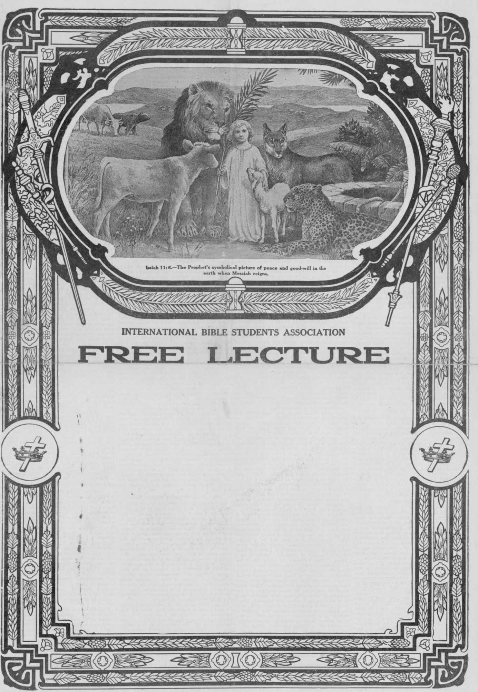

VOL. III.
NEW YORK CITY
No. 14.
2,000 PRESBYTERIAN CHURCHES WITHOUT MINISTERS.
That there are 2,000 pastorless churches in the Presbyterian denomination was the assertion made by Dr. Joseph Wilson
Cochran, secretary of the board of education, to the general assembly at Louisville, Ky.
THE STATE OF THE CHURCH.
What is the state of the church? Does it stand four-square against the introductions of the world? Parents have no time to teach their children. Families do without morning prayer. Why does not the church demand that the standards of the church should not be lowered? We are living the life of heathen. The worship is materialism and commercialism. Are we going to let the church sink to these low levels, or are we going to devise some means whereby the worship of God shall be established for every day?—Hon. S. H. Blake at the Anglican Synod.
gj|l^***,A METHODIST BROTHER 'DEFtWWk K PASTOR RUSSELL. T
M Editor of Age-Herald, Birmingham, Ala. \\ ■ “I note there is strenuous opposition f to the ‘Scripture Studies’ as ’promulgated | by Pastor Russell, of Brooklyn, N. Y., and that this opposition has become so pro-fg. nounced that the Pastors’ Union on various occasions has given verbal expression to their views on the subject, and -----nmr'recemTF^^ ^as started throughout the country to muzzle the press, and stop the publication of his sermons in the newspapers.
“It is evident from this that we have reached a crisis in the religious world hitherto unknown..
“hd which I thought impossible in this enlightened Age. To hinder free thought, free speech, free investigation and the publication of religious truth, is the most daring yentur^^^Jto^^e^jg^^Jk^ggjQ^mip-,makev^
^*Rather t-han to take the step of stopping the mouth of one of God’s humble k servants who is earnestly setting forth I his views on the Bible, I would suffer my • arm severed from my body—yea, my head. ' Remember what Jesus said about offending one of His little ones who believes on Him: ‘And whosoever shall offend one of these little ones that believe in Me, it is
“We are gaining barely enough men to supply the church,” he said. “In calling for more men we are calling for heroes who must face starvation wages.” better for him that a millstone were hanged about his neck and he were cast into the sea.’ (Mark 9:42.) Why do they not meet Mr. Russell in the forum and from their pulpits combat his teaching by the Scripture? Are they not able to meet him? Does he not support every argument and every thought presented, by
Scripture ?
“Again, why do they not rest their case in the hands of God like the wise Gamaliel did, in the days of the Apostles, when Peter and others were on trial? Gamaliel rose up in the council and said: ‘Refrain from these men, and let them
alone, for if this work be of men, it will come to naught, but if it be of God, ye cannot overthrow it, for you fight against God.’
“In some places Mr. Russell’s books haSFbeej^oTTFEW~'a1^
1ss^^’^tK-ffie'''restirr thaU'hTs' ‘books qod ^WTntnO’'^‘^afi‘irTff'rthls fight as sure as weFlive. 'BewareT"T^vnFn "them that. the may not bring condemnation upon themselves.
“There is already widespread discontent. Somehow our people are feeling after God and looking around for spiritual food more substantial than they have been feeding upon. Let them look. Let them search for Truth wherever it may be found. Our people are intelligent and able to think for themselves and will do it. All can read, and have Bibles and other books explaining the Bible, or can get them if desired. When leaders of churches unite to force people to accept or reject creeds according to their views by restraining the liberty of speech and the liberty of the press, to prevent the publication of doctrines of the Bible according to other men’s views, they have departed from the rational idea of dealing with the subject, and we cannot hold with them.
. “S. A. ELLIS.”
THE NEGRO QUESTION
IS HE HUMAN OR BEAST? HAS GOD MADE PROVISION FOR THE SALVATION OF THE NEGRO? WILL HE EVER BE RAISED TO THE POSITION OF EQUALITY WITH THE WHITE MAN? WHAT WILL BE HIS FINAL DESTINY? DISCUSSED IN THE LIGHT OF THE BIBLE.
COR CENTURIES the Negro Question has provoked much discussion. To the worldly-wise the problem seems no nearer a solution now than at the beginning. Some have resorted to the Bible in an effort to establish their contention that the negro is a “brute beast,” therefore not the object of Divine favor, but the foreordained slave of man, with rights equal only to other beasts of the field. These arguments, claimed to be based on the Scriptures, we here examine:
Cain’s Sin.
Advocates of the “beast” theory insist that Cain married a black beast, a negress, and for this cause he was a sinner, and therefore his sacrifice was not acceptable to God, Gen. 4:7 being cited in proof of this contention. In our common version this Scripture reads, “If thou doest well, shalt thou not be accepted? and if thou doest not well, sin lieth at the door. And unto thee shall be his desire, and thou shalt rule over him.” And even this translation is so twisted as to make it read, “Unto thee shall be her desire and you shall rule over her (the negress, his wife).” Such is scarcely worthy to be dignified as an argument.
The facts are, Cain and Abel brought to the Lord their offerings for sacrifice, Abel bringing an animal, Cain the fruits of-the ground. There is nothing said about. Cain's offering being a sin" nor that it was even wrong on his part to bring such an offering. The first mention of his sin was his jealousy, which led to the murder of his brother. Adam and all his race were under the condemnation of death, and the Lord desired to teach man that this death sentence could be removed only through the shedding of blood. By the sacrifice of animals God instituted types, foreshadowing that the death sentence of man cbuld and would be removed only by the Great Sacrifice for sin, the blood of Jesus. The fruit of the field could not represent such sacrifice, hence was not acceptable to God. The sacrifice of the live animal typified the Great Sacrifice, hence was acceptable to Jehovah.
God was demonstrating to Cain and Abel what was acceptable to Him, and had Cain been in the proper attitude of heart he would have learned the lesson, and would then have brought an animal for an offering. But instead he became angry with his brother, and because of his anger, God rebuked him in these words (Leeser translation), “If thou doest well, shalt thou not be accepted? and if thou doest not well (now that you know what would be acceptable to Me as a sacrifice), sin lieth at the door and unto thee is its’ desire; but thou canst rule over it” (you can get the victory over this wrong attitude of mind if you desire). Cain failed to learn the lesson, and continued in the wrong attitude of heart until the murder of his brother resulted.
At this time Cain had no wife and there- The facts are exactly to the contrary, fore his sin could not have referred to her. If the negro is a brute beast, then it would Later he went and dwelt in, the land of be impossible, as demonstrated by scien-Nod, east of Eden, and there he married, tide experiments, for the offspring above
undoubtedly^ his , own sisteit Such. _ was the custom of early times,_and it could not have been otherwise, since there were no other human beings on the earth.
The Bible shows that it was not a sin in the sight of God for a white man to marry a negress. Note the fact that Moses married a negress, and had children by her. Had this been a sin on Moses’ part he would have been rejected from Divine favor. On the contrary, after his marriage, Moses was chosen to be the representative and leader of God’s people out of Egyptian bondage, and it is declared of him in the Scriptures that God made him the head of the house of servants, the nation of Israel, as a type of the Great Head of the house of sons, Jesus Christ. To show that God was not displeased with Moses’ marrying a negress, when his sister Miriam upbraided him for his marriage to the negress the Lord defended him and smote Miriam with a plague of leprosy as a punishment for her improper conduct.
The Bible shows that God has manifested His favor toward the negro. For instance, Zipporah was an Ethiopian, Ebed-Melech was also an Ethiopian, one of Zedekiah’s household, and very zealous for Jeremiah, the Lord’s Prophet, and was specially honored by the Prophet.
The eunuch to whom Philip was sent with the message of salvation was unquestionably an Ethiopian. (Jer. 13:23; Acts 8:27.) Philip nowhere intimates that this Ethiopian was a beast and not a man, but on the contrary, Philip was ready to preach the Gospel to him and to accept him as a brother in Christ upon his confession of faith.
The great weight of evidence is to the effect that the Queen of Sheba was a negress and Solomon is presumed to have referred to her in Cant. 1:5, 6.
Coming down to more modern times, we note that the Emperor of Abyssinia claims to be a descendant of the Queen of Sheba. He is a negro, yet an able warrior and general, successfully defeating the Italian army a few years ago.
It is further argued that in Jonah 3:8 the word “beast” refers to the negro, because it says that both “man and beast” were commanded to wear sackcloth as a sign of humiliation before God, and that it would be inappropriate for cattle and sheep to wear sackcloth. This argument loses all of its force, however, when we read in the preceding verse, “Let neither man nor beast, herd nor flock, taste anything, let them not feed.nQr dri^k water.” Thus we see that it was commanded that the brute beast should participate in this fast before God.
We are confronted with a Scripture, Exodus 19:13, which reads, “There shall not an hand touch it, . . . whether it be beast or man.” It is insisted that the beasts of the field have not hands and therefore the “beasts” here refers to the negro. This argument is without yveight when we observe that the Hebrew word used, here translated “hand,” is “yad.” The Hebrews used the same word for “paw.” For instance, 1 Sam. 17:37, we read, “The paw (yad) of the lion and the paw of the bear.”
The inspired witness of the Lord settles this question beyond doubt when he says (Acts 17:26), “God hath made of one blood all nations of men for to dwell on all the face of the earth.”
The beast of the field God created without moral sense, but of man it is written, “God created man in His own image.” (Gen. 1:27.) God endowed man with reasoning faculties, the sense of justice, of right and wrong. This endowment He did not give to the brute beast, and yet we know from experience that the negro possesses these Godlike qualities.
The Facts to the Contrary.
It is argued that those negroes who show a development of moral sense, intellectual power and ability, are only those who are offspring from a union between the white man and the negro.
mentioned to propagate its own species. The great Creator has so fixed the boundaries and limitations that it is impossible for different species to intermingle. For instance, a cross-breed of a horse and a donkey, a dog and a cat, cannot
J THE RICH MAA AMI EAZARUS
"W All Christians have wondered re- &■ x< specting this parable. When taken t ■W literally it seems unreasonable. Why g-xj should a man suffer torture merely L x) because he was rich, well clothed, xj and bountifully fed? And why should L « another man be carried to glory xj simply because he was sick and poor L yi and a companion of dogs? In the xi clear light now shining, this parable L is luminous and beautiful to such yj an extent that one is compelled to laugh at his own foolish misunder-
Xj standing of it in the past.
The full explanation of this par- (S’ xi able is given in another number, A which we shall be glad to send you. jx N free of charge, upon postal-card request. Address, Bible & Tract |x Society, 17 Hicks St., Brooklyn, *x A New York. N be secured with powers of propagation. It follows, tl erefore, that if the negro is a brute beast the" offspring resulting from the cohabitation of a white man with a negress would not be capable of propagation. This scientific demonstration cannot be set aside by any amount of sophistry or theorizing. In this respect science and the Bible are in perfect harmony.
The Scriptures-teach that Adam was the original head of the human family. Later, all except Noah and his family were destroyed in the great Flood. From that time Noah is recognized as the head of the different nations of the earth.
Prior to the flood there was no rainfall. After the flood there was a great climatic change which caused fermentation, before unknown, a change which Noah learned by actual experience. The atmospheric changes caused the grape juice to ferment, producing alcohol. Noah, not knowing this, drank freely and became intoxicated. Prior to the flood climatic conditions were the same all over the earth. After the flood the climate was different in many parts of the earth. A change in the climate that would cause-fermentation would evidently have an effect upon the color of the skin and the complexion of the human race. This would vary in different parts of the earth.
The First Black Man.
It is generally conceded that Noah’s son, Ham, went southward, locating in Africa.. The strong rays of the sun would evidently affect the complexion of his offspring. We read that afterwards Ham had a son whom he named Kush. The-word Kush means black, and it is very probable that he was so named because of his color, and that he was the first black man. In harmony with this we find that -the-bla-sk—rae-e- eemeir-from-African—S-fi—tm-another son of Noah, remained near the-Mediterranean Sea, and from him sprang the millions of Armenia, Persia, Assyria, and Egypt. The other son, Japheth, went northward, and his offspring populated Turkey, Russia and Europe. Undoubtedly the climate and soil had much to do with the difference of offspring of these three: sons. This is well illustrated in the veg etable family. For instance, the apple, which reaches so great a degree of perfection in a cold climate, if transferred to a warm one, will soon die out entirely and produce no fruit. The same is noticeable if the tropical fruits are transferred to a cold climate.
All are agreed that dogs are of one general family, and yet we find that locality, climate and the kind of food subsisted upon has much to do with the differences in these animals. The same principle applies to the human race; therefore we explain that the differences of color are the result of the climatic conditions, soil and environment.
In considering this question we are not to forget the strong pre-natal influence of the mother’s mind upon her offspring, co-operating with the influences of the climate and soil. Suppose, to illustrate, a man and wife should go from North America to China. Not only would the influence of the climate and soil be manifest upon themselves, but the same would be still more manifest in the children, and each succeeding child born in that condition would increasingly resemble the Chinese. How often have we noticed that the offspring of parents who come from Austria or Germany and reside in North America soon lose the characteristics of the Austrian and the German and take on those of the American. There is a suggestion i» the Bible illustrating this point, as<noted in the Songs of Solomon 1:6, whe're it is supposed the Queen of Sheba, who, as we have heretofore noted, was a negress, speaking to the King, says, “Look not upon me because I am black, because the sun hath looked, upon me” (that is to say, the sun hath made me black).
God Made of One Blood All Nations.
From the foregoing Bible testimorfy the reasonable mind must conclude that the negro is a human being; and since the Apostle declares to us that “God made of one blood all nations of men for to dwell on all the face of the earth,” and since we read in the Scriptures that Adam was the father of the human race, we are able to reach a definite conclusion as to why the negro as a race has been and is much degraded. The reason thereof is stated in the Bible, which we find to be as follows:
God made Adam a perfect man, mentally, morally and physically, and give him (Continued on 2d page, 2d co'.umu.}
PVBLISHEI) AI
N0.8SBEEKMAN ST.,M3V YOKK CITY
C. W. Hek. Publisher.
An Independent, Unsectarian Religious Newspaper, Specially Devoted to the Forwarding of the Laymen’s Home Missionary Movement for the Glory of God and Good of Humanity.
EVOLUTIONISTS ARE PERPLEXED.
Time after time the world’s scientific conclusions have contradicted each other. It is not long since Evolutionists gave the impression to the public that but . a little while ago they ascended from monkey parentage. Their latest pronouncement is that man three hundred thousand years ago was quite intelligent, perhaps equally so with man of the present time. They have dug up a skeleton in England which they claim teaches this. Hear the testimony set forth by the “London Standard”:
In a work-room of the Royal College of Surgeons, in Lincoln’s Inn-fields, there lies at the present moment the skeleton of what is probably the earliest European man yet discovered, with the sole exception of that specimen of our species who owned the huge “Heidelberg” jaw. It has been brought to light in the ordinary course of extending a brickyard about a mile to the north of Ipswich, and English scientists and archaeologists have carefully lifted it, and are investigating its claims to antiquity. Professor Keith, curator of the Museum of the Royal College of Surgeons, who removed it from the earth in which it was preserved, showed it to a “Standard” representative.
First, there is soil, then a boulder-clay layer riddled with chalk, and then midglacial sand. The skeleton was found just where the boulder-elay meets the midglacial sands, and its preservation is due to the chalky glacial sand. One may calculate, perhaps, that the man dates from 300,900 or 400,000 years ago, for all the beds of the rivers of England were cut out subsequently to the period marked by the boulder-clay and glacial sand.
Highly Civilized.
Professor Keith took up the jawless head of the skeleton, and pointed to the cast of the brain formed by the infiltration of the boulder-clay. “There is the third frontal convolution, you notice, with which speech is connected. It is very well developed, and so one may conclude that —trui' -fri-end beiOxiged to a stage of advaticc'd civilization. The forehead is sloping, but quite similar to our own foreheads. Here is a bit of it—the supra-orbital bone—■ just above the eyes, and you note that it is not pushed to the extreme and menacing development of the later ‘Neanderthal’ man.
“However, the remarkable thing is the similarity of form between this earliest European and ourselves. In fact, the later ‘Neanderthal’ man is quite old-fashioned, so to speak, while this man, in most of the configuration of his skeleton, is of our own time. If our surmises are correct, this means that, physically, modern man was a developed creature before the beginning of the glacial period. Thus two types of primitive man existed side by side, but one type endured.”
Our learned professors get themselves into all this difficulty because they have concluded that the Bible is a foolish, old Book, not at all Divinely inspired. A return to faith in the Bible would correct all their difficulties. To our understanding the Bible teaches that man has been on the earth only six thousand years— and surely the present rate of increase of population accords well with this theory. According to the Bible account we may understand that the last glacial period was at the time of the last great flood, which occurred in Noah’s day, as previous great floods had occurred long before man came into the world. These floods were all accompanied by glacial periods. They came from the falling in upon the earth of great bodies of water which previously surrounded the earth like rings, as now seen around Saturn. These rings gradually, one after the other, drew nearer the earth, spread out like an envelope, made it temperate for a time, and finally burst at the poles, bringing floods. These floods produced the Arctic glaciers. According to the Bible account, therefore, we would say that the man whose skeleton has recently been found was drowned in the flood in Noah’s day—about 4,300 years ago, instead of 300,000 years ago. Let us stick to the good old Book.
GONG OF TROLLEY CARS TO CLANG IN OLD JERUSALEM.
The ancient capital of the Jebusites, whose known history runs back to 1400 B. C., is to resound with the gongs of the trolley car and the fire engine.
The narrow, tortuous and dirty streets which the naked feet of the crusaders trod, are to be asphalted and drained and kept clean and will be washed down by an up-to-date water supply.
The city, which was the seat of David’s kingdom, will be lighted by electricity.
Doubtless the Jericho and Jerusalem, and the Zion and Dead Sea electric railways will be operated.—N. Y. American.
(Continued from 1st page, 4th column.) the right to live in happiness and peace so long as he obeyed God’s Daw. Adam was clearly informed that a violation of God’s Law would result in death. (Gen. 2:17.) Adam violated God’s Law, and the sentence of death was passed upon him, taking from him the right to live and the right to the enjoyment of the perfection and blessings of Eden. God sent him forth into the unfinished earth, there to battle with the elements, to feed upon the less nourishing foods the earth produced, and thereby to gradually suffer the penalty of death. (Gen. 3:17-24.) Eden was the only perfect place in the earth; all other parts were in an unfinished condition. By Adam’s disobedience he lost access to Eden, hence suffered the natural results of earning his bread in the sweat of his face and of eating the poisonous foods of the unprepared earth.
God had given Adam the power to propagate his own species. Therefore, this penalty of death pursued th'e spark of life transmitted by Adam to his offspring, and as a natural result all of his children were born under the condemnation of death. In proof of this we read (Rom. 5:12), “Wherefore, as by one man sin entered into the world, and death by sin; and so death passed upon all men, for that all have sinned.”
Negro a Soul.
Those who argue that the negro is a beast, and not a man, say, A negro has no soul and therefore there is no future life for him. To this we answer, Neither has a white man a soul. A soul Is a breathing, sentient being. Man himself Is a soul; but he does not possess a soul. Concerning man we read, “God formed man of the dust of the ground, and breathed into his nostrils the breath of life, and man became a living soul.”— Gen. 2:7.
Thus we see that the soul is that which results from the union of the breath of life with the body, or organism. The dust out of which God made man was not conscious, the breath of life was not conscious, but when God had formed the organism and breathed into the nostrils the breath of life, a soul was the result; namely, a conscious being, a creature, a man. It was the man (soul) to whom God said, If you violate My Law you shall die. It was the soul (the man) that disobeyed Jehovah; it was the soul (the man) that was sentenced to death and that actually died. The Scriptures declare, “The soul that sinneth it shall die.” (Ezek. 18:4.) Again we read, “What man is he that liveth and shall not see death? Shall he deliver his soul from the hand of the grave?”—Psa. 89:48.
The Scriptures nowhere teach that man -has an undying, or immortal;
expression, “immortal soul,” is nowhere found in the Bible. All souls—that is to say, all breathing creatures—die alike. There is no difference between the death of man and the death of a beast, and in death man has no pre-eminence above the beast; as we read, “For that which be-falleth the sons of men befalleth beasts; even one thing befalleth them; as the one dieth, so dieth the other; yea, they have all one breath; so that a man hath no pre-eminence above a beast.”—Eccl. 3:19.
Whether the negro is a man or a beast we see there is no difference in his death and the death of any other creature. But the Bible clearly shows that the negro is not a beast, but a man, a soul, a being, subject to death, and that he came, in common with all men, under the sentence of death by virtue of the disobedience of Father Adam. God created no creature with the quality of immortality, that is to say, indestructibility. Originally God alone was immortal; as we read, “He only hath immortality, dwelling in light which no man can approach unto.” (1 Tim. 6:16.) But this immortality He has promised to certain other creatures conditionally, as we shall discuss later.
Where Are the Dead?
Adam was legally dead from the moment he was sentenced to death and driven out of Eden. The execution of the judgment of death began at that time and was completed in the actual death of Adam 930 years later. The direct offspring of Adam were begotten and born within that period of time and hence all “were conceived in sin, and brought forth in iniquity.” (Psa. 51:5.) Since we see that in death man has no pre-eminence above the beast, it follows conclusively that in death the white man has no pre-eminence above the negro. The Scriptures declare, “All go unto one place, all are of the dust, and all turn to dust again.” (Eccl. 3:19, 20.) It follows, then, that the white man and the black man in death occupy exactly the same position.
■*j FREE LITERATURE !
Send postal-card request to Bible d & Tract Society, 17 Hicks St., Brook- &.
lyn, N. Y., for free copies of this >4 paper. Some of the interesting sub- a. 7; jects you may have for asking are: xj Calamities—Why Permitted? a.
Xj Prince Lucifer of Old Now Prince a.
xj Do You Believe in the Resurrec- n x’ tion ?
Some erroneously conclude that when man dies the body alone returns to the dust and the soul lives on, and in support of this erroneous position they cite and misinterpret the following Scripture: “Then shall the dust return to the earth as it was, and the spirit shall return unto God who gave it.” (Eccl. 12:7.) The word here translated “spirit” is not synonymous with the word soul, but is from the same Hebrew word translated “breath of lives,” and means the life principle, or right to live, which God gave to Adam, and which Adam forfeited by his disobedience, and actually lost at the time of his death. At death the body returns to the dust; the spirit, the breath of life, returns to God; therefore the soul, the moving, breathing creature, the man, ceases to exist, and goes into the condition of death. Hence, with propriety, we say that at'death the man, the soul, goes to hell; not a place of torment, nor of fire and brimstone, but the Bible hell, which means the death condition.
Four Words from Which Hell Is Translated.
The Hebrew word “sheol” is the only word in the Old Testament that is translated into the English word “hell.” It nowhere means a condition of torment, but in every instance means the condition of death, non-existence. In proof of this we cite some Scriptures wherein the word is used. “Oh, that Thou wouldst hide me in sheol (the grave) until Thy wrath be passed.” (Job 14:13.) “If I wait, sheol (the grave) is mine house; I have made my bed in the darkness.”—Job. 17:13.
This word “sheol” in our common version is translated “grave” more times than it is translated “hell.” It means the same in every instance, namely, the condition of death. In that condition there is no consciousness, there is no knowledge; as we read, “In death there is no remembrance of Thee; in the grave (‘sheol’), who shall give Thee thanks?” (Psa. 6:5); and again, “The living know that they shall die, but the dead know not anything.” Whatsoever thy hand findeth to do, do it with thy might; for there is no work, nor device, nor knowledge, nor wisdom, in the grave (‘sheol’) whither thou goest.”— Eccl. 9:5, 10.
In the New Testament we find three words translated “hell,” according to our common version of the Bible. The original manuscript is in the Greek language, and the Greek words “hades,” “gehenna” and “tartaroo” are translated into the English word “hell.” “Hades” in the Greek has the same meaning as “sheol” in the Hebrew, both meaning the condition of death, oblivion, the grave. The Apostle Peter, quoting from Psalm 16:10, Wherein the word “sheol” is translated “hell,” says, “Thou wilt not leave My soul in hell (hades); neither wilt Thou suffer Thine Holy One to see corruption.” (Acts 2:27.) He then proceeds to explain that the Prophet, as recorded in the Psalm, spoke concerning the resurrection of Jesus Christ, that “His soul was not left in “hades” (“sheol,” the death condition), neither did His flesh see corruption.”— Acts 2:31.
The Greek word “gehenna,” translated in our authorized version “hell,” likewise refers to the condition of death, destruction. It was the classical Greek manner of expressing the Hebrew phrase, “the valley of Hinnom,” which valley, located just outside the walls of the city of Jerusalem, was used by the Jews as a place for destroying the offal of the city. Into it were cast the bodies of dead animals, and sometimes the bodies of criminals, but in no instance were live creatures cast into this valley. In casting bodies over the precipice one might lodge on a projection of the rocks from the edge thereof, and therefore not reach the bottom of the valley. A body thus lodged would be consumed by worms and the one reaching the bottom of the valley would be consumed by the fire kept burning for that purpose.
Thus the valley represented a place of complete destruction. Jesus defined it as a place of destruction, and not a place of torment, when He said, “Fear not them which can kill the body, but are not able to kill the soul; but rather fear Him (God) who is able to destroy both soul and body in “gehenna.” (Matt. 10:28.) Here Jesus was speaking to His disciples and used plain language. On the contrary, when He spoke to the multitude, He always employed a parable. (Matt. 13:34.) On another occasion He used this same word in addressing the multitude, and in accordance with the invariable rule, used it in a parabolic sense, when He said, “If thine eye offend thee, pluck it out; it is better for thee to enter into the Kingdom of God with one eye, than having two eyes to be cast into hell-fire (‘gehenna’ Are), where the worm dieth not, and the fire is not quenched.” (Mark 9:47, 48.) On this occasion He was showing the Jews, who were rejecting Him, that it was better for them to part with anything, even though it were as dear as an eye, than to be destroyed in “gehenna”—the wofm and the fire both symbolizing destruction.
The Greek word “tartaroo” occurs but once in the Scriptures, and is translated “hell.” It i!s found in 2 Pet. 2:4, which reads thus: “God spared not the angels that sinned, but cast them down to ‘hell’ (‘tartaroo’), and delivered them into chains of darkness, to be reserved unto judgment.”
As this has to do with certain angels that sinned, and not with humanity, and since there are many today more or less under the influence of Demonism—Spiritism—we will .send further information upon postcard request.
“Hades” represents a condition of death from which God has promised a resurrection. ’ “Gehenna” represents a condition of death from which there will be no resurrection. But in no instance does either of these words represent a state of conscious torment. The negro being a descendant of Father Adam, and coming under the judgment of death passed upon Adam, passes at death into exactly the same condition as that occupied by all other members of the Adamic race, and is, therefore, subject to the same Divine laws relative to Adam’s race. “All in Adam die.” (1 Cor. 15:22.) “By one man (Adam) sin entered into the world, and death by sin, and so death (sentence) passed upon all.”—Rom. 5:12.
Salvation from Death.
Has God made provision for the salvation of man from death, and if so does this provision include the negro?
The sentence of death passed upon Father Adam, and is not subject to reversal; it cannot be reversed, because “God cannot deny Himself;” “It is impossible for God to lie.” Having sentenced man to death on account of disobedience to His Law, Justice demands that man shall be held in death. However, while God could not consistently reverse His own judgment, He could make a provision in His Law for the satisfaction of that judgment —that is to say, He could provide that another meet the requirements of the Law in place of Adam, and thereby release Adam and his offspring from the sentence of death; and if such provision is made, of necessity it must include all of Adam’s race, the negro as well as the white. Before the foundation of the world God made provision in His Plan that mankind should be redeemed from the condition of death and ultimately be delivered from the baneful effects of sin.
The angels of heaven, beholding the condition of man resulting from sin, came to earth for the purpose of attempting to uplift humankind, but, departing from their first estate, and assuming human form, some Invaded the sanctity of Adam’s family, debauched the human race and turned all of their thoughts and conduct into channels of wickedness—Noah and his family alone being free* from their baneful influence. “Noah was a just man, and perfect in his generation.”—Gen. 6:9.
The great deluge followed, in which only Noah and his household were preserved. After the great flood, man again began to multiply and fill the earth. Nearly two thousand years had passed since God drove Adam from Eden. The burdens of sin fell heavily upon his offspring with no tangible hope of relief. Then it was that God called upon Abraham and said, “I will bless thee and make thee a blessing, and in thee shall all the families of the earth be blessed.” (Genesis 12:2, 3.) Having strong faith in this promise, Abraham gave glory to God, patiently waiting for the time when this promised blessing should come. Yet it came not in his time. Abraham slept with his fathers, not having received the fulfilment of the promise. The promise was then given to Abraham’s offspring,.Isaac, and later to Jacob. These also passed into’death, not having received the fulfilment of the promise.
Then God established the House of Servants, viz., the Jewish nation, to whom He renewed the promise time and again through the mouth of the holy Prophets. With this nation He made a Covenant, and as part of and incidental to said Covenant, He provided for annual sacrifices of animals, the shedding of whose blood foretold in type that there should come the Great Sacrificer, who, by His own blood, would redeem Adam and his race from the sentence of death. Two thousand years more passed away. Men continued to fight the battles of life, suffering bodily pain and mental anguish.
Wonderful Message of the Angels.
But the Jews had faith in the promise that the Great Deliverer would come, and, as it is written, at the time of the birth of Jesus, the whole world was looking for the coming of a great king. The birth of this Mighty One was heralded by the messengers of God who declared unto the shepherds, “Behold, we bring you good, tidings of great joy, which shall be unto all people; for unto you is born this day in the city of David a Savior, which is Christ the Lord.” (Luke 2:9-11.) Of this Mighty One it had been prophetically written in the Scriptures, “For unto us a Child is born; unto us a Son is given, and the Government shall be upon His shoulder, and His name shall be called Wonderful, Counselor, the Mighty God, the Everlasting Father, the Prince of Peace.” —Isaiah 9:6.
The Babe, Jesus, in due time grew to manhood, attained His legal majority and entered upon the mission for which He
THE THIEF ON THE CROSS.
71 What did Jesus mean by His k. J words, “Verily I say unto thee to-7j day, thou shalt be with Me in Para- 54. Xj dise”—if Paradise, lost 6,000 years "yj ago, will not be restored until the !4 Xj Second Coming of Jesus and the es-"X| tablishment of His Kingdom? ft.
x< The full answer to this question xj we shall be pleased t-o send you upon x< receipt of postal-card request. Ad- £ XI dress, Bible & Tract Society, 17 A-x< Hicks St., Brooklyn, N. Y. £
had come to earth. The majority of the Jewish nation rejected Him and denounced Him as an impostor, even as it had been foretold. (Isa. 53:3.) But the devout Jews believed that He would set up an earthly kingdom, and so, in due time, when He rode into Jerusalem and presented Himself as their King, they hailed Him with glad hosannas and proclaimed Him to be their King.
They understood not, as indeed they could not understand at the time, that Adam’s race must first be redeemed from the death sentence before a King could be raised to bless them; and when Jesus was crucified upon the cross His followers scattered and fled, their hopes being dashed to pieces. In due time God raised Jesus from the dead. Then Jesus appeared to His disciples, instructing them to wait at Jerusalem until they were endued with the Holy Spirit, and then they should know of God’s great Plan. At Pentecost man for the first time knew the real purpose of the coming of Jesus to earth, and the object of His death and resurrection. The faithful ones who had consecrated their lives to follow Him, now receiving the Holy Spirit, their minds were illuminated, God making known unto them the deep things of His Plan. This is in harmony with the Master’s words respecting the necessity of His departure.—See John 16:7-13.
Why Jesus Caine.
Satan, the mighty Adversary, seduced Mother Eve, causing her to disobey God. Adam, knowing the penalty, voluntarily became party to the transgression and therefore came under the sentence of death. Satan thus told the first lie when he said to Mother Eve, “Ye shall not surely die’’ (Genesis 3:4); and by this means became the murderer of the human race, as Jesus declares in John 8:44.
For four thousand years following, man suffered and groaned under the great load of sin and death, of which Satan was the author. The Apostle declares, therefore, that “Jesus partook of flesh and blood (became man), that He through death might destroy him (Satan) that hath the power of death.” (Heb. 2:14.) Jesus Himself declares, “The thief cometh not but to steal and to kill and to destroy; I am come that they (mankind) might have life, and have it more abundantly.”—John 10:10.
Therefore, in harmony with God’s Law, in order for man to obtain life, Jesus must lay down His own pure, holy, human life, that which corresponded exactly to Adam’s prior to his sin. When Jesus was thirty years of age, the time had arrived for the great Antitypical Sacrifice, foreshadowed by the sacrifice of animals, to be offered up. At Jordan, Jesus presented Himself . tCL-the Hea venly Father, and became that Great Sacrifice. Three and a half years after we behold Him dying upon the cross. Three days later He was raised from the dead, and forty days thereafter Jesus ascended into the presence of Jehovah, there to apply the merit of His Sacrifice, and to open the way for man to return to God and receive life everlasting.
Ransom for All.
Now the question arises, For whom did Jesus die, for the white man alone, oris the negro also to receive the benefit of the Ransom? The Apostle answers this question, “Jesus Christ, by the grace of God, tasted death for every man.” (Heb. 2:9.) And again, “He gave Himself a Ransom for all, to be testified in due time.” (1 Tim. 2:6.) If, therefore, the negro is a descendant of Adam, it follows beyond question that he, in due time, must, with every other man, receive the benefits of the great Ransom-price provided by the Lord Jesus Christ. The provision made for the salvation of Adam’s race must of necessity include the negro also.
The Mystery.
Ged’s Plan is yet a Mystery to the world. It first became known to mankind at Pentecost; and from time to time throughout the Gospel Age clearer light has been shed thereon. The Seed of Abraham, according to the promise, the Apostle Paul declares, is The Christ, the Anointed, and this Christ is composed of Jesus the Head, and the Church, the members of His Body, whom God has been electing, or selecting, throughout the Gospel Age.
All those who are to become of this class must first be justified by faith in the merit of Christ’s sacrifice, and then present themselves in full consecration to God, be accepted of Him and begotten by His Spirit. Their begetting, therefore, is as New Creatures, and, from God’s standpoint, they cease to be men, but become New Creatures in Christ Jesus, to which class the promise is given that if they continue faithful followers in the footsteps of Jesus unto death, they shall be partakers of His glory, honor and immortality, become sharers with Him in His glorious reign for the blessing of all the families of the earth. They are otherwise designated in the Scriptures as God’s Elect, who shall have part in the First, or Chief Resurrection.—Gal. 3:16, 27, 29; 1 Pet. 1:1-4; Rev. 20:6; 3:21.
Is it possible for the negro to be accepted and made part of this class in glory? The Apostle answers the question in these words, “There is neither Jew nor Greek, neither bond nor free, neither male nor female, for ye are all one in Christ Jesus; and if ye be Christ’s, then are ye Abraham’s Seed and heirs according to the promise.” (Gal. 3:28, 29.) This Seed is to be the instrument through which the blessing is to flow to all nations of earth, and God has declared that He is selecting these out of “every tongue and people and nation, and hath made us unto God Kings and Priests, and we shall reign on the earth.”—Rev. 5:9, 10.
History bears evidence to the fact that throughout the Gospel Age there have been a few of the negro race who have devoutly followed in the footsteps of the Master, and today we have some who give every evidence of full consecration to the Lord, faithfully following the leading of the Great Master. In Messiah’s great Kingdom the glorified members of the Body of Christ, which is the Church, will not be like either the white or the black man, no longer flesh and blood; as the Apostle declares, “It doth not yet appear what we (the Church) shall be, but we do know that when He shall appear we shall be like Him.”— 1 John 3:2; Phil. 3:21; 1 Cor. 15:50, 53, 54.
Hope of Masses.
Every effort made for the uplift of the negro race is commendable, and should have the sympathy of all honest men. Such efforts, however, are like the man trying1 to lift himself by his own bootstraps—all such must fail. Messiah’s reign of righteousness is the only panacea for all the ills to which humankind is heir. When God’s Elect class has been completed and glorified with the Head, Jesus Christ, then will the Kingdom of Heaven be established; then will the Government be upon Messiah’s shoulder; then will be the time of blessing all the families qf the earth, according to the promise made to Abraham. Speaking of that glorious reign of Messiah, St. Peter says: “Times of Refreshing shall come from the presence of the Lord; and He shall send Jesus Christ, who was before preached unto you, whom the heavens must retain until the Times of Restitution of all things which God hath spoken by the mouth of all His holy Prophets since the world began.”—Acts 3:19-21.
Sin has greatly degraded the human race, whites as well as negroes. The greater the ignorance, the farther mankind have wandered from God, the greater their degradation. That they are to have an opportunity of restoration to all that Adam lost is indeed glad tidings of great joy, and every heart shall be filled with joy that hears and obeys such glad tidings. Restoration means that a full opportunity shall be given to all of Adam’s offspring, negro and white, to come back into harmony with God and to be restored to that which Adam once possessed, namely, «a perfect organism, perfection of mind and heart, and have restored to him the Godlike qualities of justice, wisdom and love.
To accomplish this the dead must be raised and given a knowledge of the great truth that Jesus has purchased them from the sentence of death and opened the way for them to return to life and happiness. Jesus Himself declared, “The hour is coming in which all that are in their graves shall hear My voice and come forth, the righteous (meaning the faithful Christians) to a resurrection of life, and they who have done evil (meaning all who have not been children of God) to a resurrection by judgments.” (John 5:28, 29, R. V.) All the dead in hell (“Hades,” the tomb,, oblivion) must be brought forth and given a knowledge of the Truth. (1 Tim. 2:4.) Mark well that the fall and plan of redemption apply to all mankind. All came under the condemnation of death. (Rom. 5:18.) “Jesus gave Himself a Ransom for all, to be testified in due time.” (1 Tim. 2:5, 6.) All will be brought forth from the tomb (John 5:28) for the very purpose of having a trial for life. The Apostle declares, “God hath appointed a day, in which He will judge the world in righteousness by that Man whom He hath ordained; whereof He hath given assurance unto all men, in that He hath raised Him from the dead.”—Acts 17:31.
There could be no judgment without a trial, and there could be no trial without knowledge, hence all—negroes included— must be brought forth from the condition of death for the purpose of being tried for life. Messiah’s Kingdom will be a Kingdom of righteousness, where every man will stand equal before the Law, for God is no respecter of persons. (Acts 10:34.) Then, “The loftiness of man shall be bowed down, and the haughtiness of man shall be made low; and the Lord alone shall be exalted in that day.” (Isa. 2:17.) There will be but one standard and that the standard of righteousness. They who obey to the best of their ability will be rewarded with progress and health, and they who refuse to obey the Messiah, after being given a knowledge of the Truth, will be destroyed from amongst the people— will go into “Gehenna,” the Second Death, from which there is to be no resurrection. —Acts 3:23; 2 Thess. 1:9; Rev. 20:14, 15. When the Spfrit and the Bride Shall Say
“Come.”
Messiah’s Kingdom fully established, the message of glad tidings will go forth to all the families of the earth, and “The
xtx xtx xtx xtx xtx xtx xtx nx xtx xtx xtx.
J What Say the Scriptures About I
SHEOL-HADES- HELL 1
A very interesting pamphlet, ex- (4. plaining every verse in the Bible in >'• which the word Hell is found, will <4 be sent on postal-card request, free. N Address, Bible & Tract Society, a. -*< Brooklyn, N. Y. N
zjx x4x X|X X|X X|X
■iti xtx. 2!^. xtx xtx xtz xtx xtx xtx xtx xtx xtx xtx. J WHERE ARE THE DEADi
■y] This article was published in Vol. y yj I, No. 3. The great demand for |x y< copies of it has been remarkable. A ly sample copy will be mailed to any |x one free. Address, Bible Society, 17 hx Xj Hicks Street, Brooklyn, N. Y. pt
Spirit and the Bride will say ‘Come,’ and let him that heareth say, ‘Come’; and let him that is athirst come; and whosoever will, let him take the Water of Life freely.” (Rev. 22:17.) This wonderful Water of Life, the Message of Truth, will be opened to every man, negroes and whites; there is to be no limitation; but the proclamation will be, “Whosoever will, let him take of the Water of Life freely.” The teeming millions of earth shall hear the glad sound and respond thereto. “And the ransomed of the Lord shall return, and come unto Zion with songs and everlasting joy upon their heads; and they shall obtain joy and gladness, and sorrow and sighing shall flee away.”—Isa. 35:10.
The Ransomed of the Lord here mentioned mean all ,qf Adam’s race. They shall return frofis^We “land of the enemy,” from the condition of death; they shall come unto*Zion,»to the great Messiah; they shall come with songs of joy and gladness, for the time of their blessing will then be at hand; their hearts will be made glad with the knowledge of the Truth that they may obtain eternal life in a state of happiness. The Apostle declares that this glorious reign of Christ will continue until every enemy of the human race shall be destroyed, the last enemy being death. (1 Cor. 15:25, 26.) That glorious Kingdom will accomplish the wiping away of all tears from all eyes, and there shall be no more sorrow, nor crying, nor' pain, nor death, because the glorious reign of Messiah will result in everlasting life and blessing to all of the obedient.
No Racial Questions to Solve.
At that time there will be no racial questions to solve because Messiah’s Kingdom will have solved them all. At that time there will be no class distinctions nor castes, neither rich nor poor, neither high nor low, because every man will be loving his neighbor exactly as he loves himself. The light of the glorious Truth will shine in darkest Africa as brightly as it will shine in any other part of the earth. The effulgent rays from the Sun of Righteousness will then drive away all superstition and igrrorance, and the Great Deliverer will restore the obedient ones to perfection, to the image and likeness of God, as was Adam in his perfection. Is not this a glorious prospect that God has for those of mankind who will seek to know and do His will?
Let us close our eyes for a moment to the scenes of misery and woe, degradation and sorrow that yet prevail on account of sin, and picture before our mental vision the glory of a perfect’earth, for The Messiah will restore even the earth to an Edenic paradise as a habitation for man. (Isaiah 35:1-6; Ezek. 34:26, 27.) In that glorious earth restored not a stain of sin will mar the harmony and peace of perfect society; not a bitter thought, not an unkind look or word; love welling up from every heart will meet a kindred response in every other heart, and benevolence will mark every act. There sickness shall be no more; not an ache nor a pain, nor any evidence of decay; not even fear of such things. The inward purity and mental and moral perfection will stamp and glorify every radiant countenance. Such will be earth’s society. There will be no strife; the race question will be fully settled; every man will be standing upon an equality before God, every man a brother to every other man, loving his brother as himself.
Dark Hour Precedes Perfect Day.
But we would be derelict in our duty if we failed to call attention to the dark hour that must immediately precede the ushering in of Messiah’s reign of righteousness. Let no one be deceived into believing that the present kings of earth, civil, financial and ecclesiastical, will peaceably surrender their power to the Great Prince of Peace. The Divine testimony is that Satan is the god (ruler) of this present evil order of society. The mighty ones of earth, as well as those of lower degree, have imbibed his spirit of selfishness, and, being largely under Satan’s control, will surrender their power only at the hands of One Mightier than they. The great development in recent years in invention and education has not tended to lessen the chances of a conflict, but rather enhanced the same.
In the time of greatest prosperity known to the human race, in the time of the greatest enlightenment man has yet experienced, the nations of earth have armed themselves to the teeth, and are today standing with hand upon sword-hilt ready to fly at each other’s throats. During the past quarter of a century the nations have become more intimately acquainted with each other, until today every civilized nation of earth is within easy communication with every other nation by the use of the cable and the telegraph. Each nation has its representative in every other nation. By these means the nations of earth are assembled as they have never been in times past.
Writing prophetically of this time, the Lord’s inspired witness said, “Wait ye upon Me, saith the Lord, until the day that I shall rise up to the prey; for My determination is to gather the nations,
that I may assemble the kingdoms, to pour upon them Mine indignation, even all My fierce anger, for all the earth (social order —governments) shall be devoured by the fire of My jealousy.” (Zeph. 3:8.) Referring to the same time the Prophet in another place says, “And at that time shall Michael stand up, the great Prince that standeth for the children of Thy people, and there shall be a time of trouble such as never was since there was a nation, even to that same time.”—Dan. 12:1.
What part will the negro question play in this great controversy? We cannot state with exactness, but reaching a conclusion in the light of the Scriptures, and in view of conditions as they exist today, the race question will evidently have its part in this mighty conflict. The great Adversary, who caused the fall of our first parents, he who has blinded the minds of men to the glorious Message of God (2 Cor. 4:3, 4) throughout the whole Age, is diligently seeking to stir up strife between the negroes and the whites, which can result in no good to either.
Seek Meekness—It May Be Ye Shall Be Hid.
From the foregoing Scriptures it must be clear to the reasonable and thoughtful mind that the solution of this great question lids only in the establishment of Messiah’s Kingdom of righteousness. At that time, as it is written, “Judgment also will I lay to the line and righteousness to the plummet.” (Isa. 28:17.) “And righteousness shall be the girdle of His loins and faithfulness the girdle of His reins.” (Isa. 11:5.) Such a reign of righteousness alone can settle this and all other great questions with which the race now contends.
What then should be the attitude of one today who in the light of “Present Truth” beholds the storm arising from every quarter and the great Time of Trouble approaching with rapidity? We answer in the language of the Prophet, “Seek ye the Lord, all yd meek of the earth, which have wrought His judgment; seek righteousness, seek meekness; it maybe ye shall be hid in the day of the Lord’s anger.” (Zeph. 2:3.) For more than eighteen centuries the Christian has prayed, “Thy Kingdom come, Thy will be done on earth, as it is done in heaven.” Even the world unconsciously awaits the coming of this Kingdom. Therefore let him whom God has favored with some knowledge of His great Plan turn his heart to the Lord, present himself wholly to God, that he may know and do His will, and thus prepare himself for the ushering in of the Kingdom, which shall uplift all the families of the earth.
MEN DARE TO THINK NOW.
Atlanta Constitution—Editorial.
The former Associate Editor of this well-known Journal of the South spent many sleepless nights in worry concerning the “Hell-Fire and Brimstone” theory. Later he came into possession of “The Divine Plan of the Ages,” the first of a series of six volumes of “Studies in the Scriptures,” by Pastor Russell. After reading the book a great burden was lifted from his mind and he then said:
“It is impossible to read this book without loving the writer and pondering his wonderful solution of the great mysteries that have troubled us all our lives. There is hardly a family to be found that has not lost some loved one who died outside the Church—outside the plan of salvation, and, if Calvinism be true, outside of all hope and inside of eternal torment and despair. We smother our feelings and turn away from the horrible picture. We dare not deny the faith of our fathers, and yet can it be possible that the good mother and her wandering child are forever separated?—forever and forever?
More Light the Watchword!
“This wonderful book makes no assertions that are not well sustained by the Scriptures. It is built up stone by stone, and upon every stone is the text, and it becomes a pyramid of God’s love, and mercy, and wisdom. There is nothing in the Bible that the author denies or doubts, but there are many texts upon which he throws a flood of light that dispels many dark and gloomy forebodings. I see that editors of leading journals, and many orthodox ministers of different denominations, have indorsed it and have confessed to this new and comforting light that has dawned upon the interpretation of God’s Book. Then let every man read and ponder and take comfort, for we are all prisoners of hope. This is an Age of advanced thought, and more thinking is done than ever before—men dare to think now. Light—more light, is the watchword.”
Four Million copies of “The Divine Plan of the Ages” have been placed in the homes of Christian people. The book is published in fourteen different languages. Aside from the Bible itself, the demand for this book has been the greatest of any ever published. Students of the Bible have found that “The Divine Plan of the Ages” is indispensable to their studies. It removes the stumbling stones. The book of 384 pages, neatly bound in imported cloth and containing an interesting Chart of the Ages, is published and distributed by the Bible and Tract Society, No. 15 Hicks St., Brooklyn, N. Y., for the nominal sum of 35 cents per volume, any language. This book has made Pastor Russell famous, and has made thousands of Bible students strong in the faith of God 3 Word and a mighty power in the battle for the Truth.
7FH™
INTERNATIONAL BIBLE STUDENTS ASSOCIATION
Behold, I bring you Good Tidings of Great Joy, which shall be to all People.
—Luke 2:10